<title>NuriCell Questions Mockups</title>
<meta name="claude:viewport-fit-sides" content="cover">
<link rel="preconnect" href="https://fonts.googleapis.com">
<link rel="preconnect" href="https://fonts.gstatic.com" crossorigin>
<link rel="stylesheet" href="https://fonts.googleapis.com/css2?family=Ysabeau:wght@500;600&display=swap">
<style>
  /* Layout: one calm column of paper; each idea is a chapter with its name, a few lines, then its
     pictures (desktop large, phone beside it on wide screens). */
  :root {
    --paper: #f8f3ea;
    --sheet: #fffdf8;
    --ink: #0c0b0a;
    --muted: #514e48;
    --hair: rgba(28, 27, 25, 0.22);
    --gold: #7d5f1c;
    --title: "Ysabeau", "Iowan Old Style", Georgia, serif;
    --body: system-ui, -apple-system, "Segoe UI", Roboto, Helvetica, Arial, sans-serif;
  }
  @media (prefers-color-scheme: dark) {
    :root:not([data-theme="light"]) {
      --paper: #1b1a18; --sheet: #24221f; --ink: #efe9dd; --muted: #b9b2a5;
      --hair: rgba(239, 233, 221, 0.2); --gold: #d4b26a; color-scheme: dark;
    }
  }
  :root[data-theme="dark"] {
    --paper: #1b1a18; --sheet: #24221f; --ink: #efe9dd; --muted: #b9b2a5;
    --hair: rgba(239, 233, 221, 0.2); --gold: #d4b26a; color-scheme: dark;
  }
  body {
    background: var(--paper);
    color: var(--ink);
    font: 17px/1.55 var(--body);
    padding-left: max(16px, env(safe-area-inset-left, 0px));
    padding-right: max(16px, env(safe-area-inset-right, 0px));
  }
  main { max-width: 1120px; margin: 0 auto; padding-block: 40px 80px; display: grid; gap: 64px; }
  h1, h2 { font-family: var(--title); font-weight: 600; letter-spacing: -0.01em; text-wrap: balance; margin: 0; }
  h1 { font-size: clamp(34px, 5vw, 52px); line-height: 1.05; }
  h2 { font-size: clamp(28px, 3.6vw, 40px); line-height: 1.1; }
  p { margin: 0; max-width: 62ch; }
  .lede { display: grid; gap: 14px; }
  .lede p { color: var(--muted); }
  .pick { color: var(--ink); font-weight: 600; }
  section { display: grid; gap: 20px; padding-top: 28px; border-top: 1px solid var(--hair); }
  .tag { display: inline-grid; place-items: center; width: 1.6em; height: 1.6em; margin-right: 10px; border: 1.5px solid currentColor; border-radius: 50%; font-size: 0.8em; vertical-align: 0.12em; }
  ul { margin: 0; padding-left: 1.2em; display: grid; gap: 6px; max-width: 64ch; }
  li::marker { color: var(--muted); }
  .score { font-weight: 600; }
  .score b { color: var(--gold); }
  figure { margin: 0; display: grid; gap: 8px; min-width: 0; }
  figure img { display: block; width: 100%; height: auto; border: 1px solid var(--hair); border-radius: 6px; background: var(--sheet); }
  figcaption { color: var(--muted); font-size: 14.5px; }
  .pair { display: grid; grid-template-columns: minmax(0, 3fr) minmax(0, 1fr); gap: 20px; align-items: start; }
  .two { display: grid; grid-template-columns: repeat(2, minmax(0, 1fr)); gap: 20px; }
  .paints { display: grid; grid-template-columns: repeat(6, minmax(0, 1fr)); gap: 10px; }
  .paints figure img { border: 0; background: none; }
  .paints figcaption { font-size: 13px; line-height: 1.35; }
  .now { max-width: 560px; }
  .note { color: var(--muted); }
  @media (max-width: 760px) {
    .pair, .two { grid-template-columns: 1fr; }
    .pair figure:last-child { max-width: 320px; }
    .paints { grid-template-columns: repeat(3, minmax(0, 1fr)); }
  }
</style>

<main>
  <div class="lede">
    <h1>The Questions part, two new looks</h1>
    <p>Both keep your words as they are. Both add ink paintings that show the answer. <span class="pick">I recommend A.</span></p>
    <p>These are mockups, put on the real page in the browser. Nothing on the site has changed.</p>
    <figure class="now">
      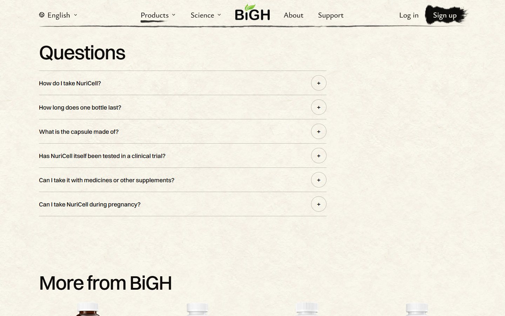
      <figcaption>Today: six lines and round "+" buttons. The right half is empty.</figcaption>
    </figure>
  </div>

  <section>
    <h2><span class="tag">A</span>A picture for each question</h2>
    <ul>
      <li>The questions sit on the left. Tap one, and its painting and answer show on the right.</li>
      <li>Each painting shows the answer: 3 capsules by breakfast, a month of ticks, a capsule opened over rice.</li>
      <li>One picture at a time, so it stays calm.</li>
      <li>On a phone, the question opens in place with its painting.</li>
    </ul>
    <p class="score">My score: <b>8.5 / 10</b></p>
    <p class="note">What holds it back: the other questions are grey words, so a first-time visitor may not see at once that they can be tapped. The baby booties look a little lumpy.</p>
    <div class="pair">
      <figure>
        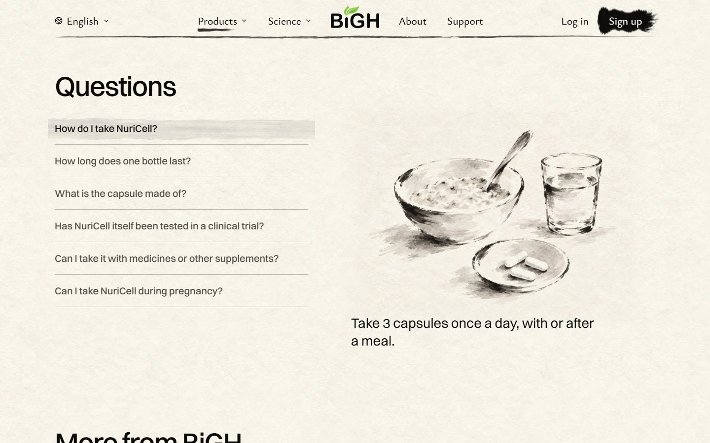
        <figcaption>Laptop: first question picked.</figcaption>
      </figure>
      <figure>
        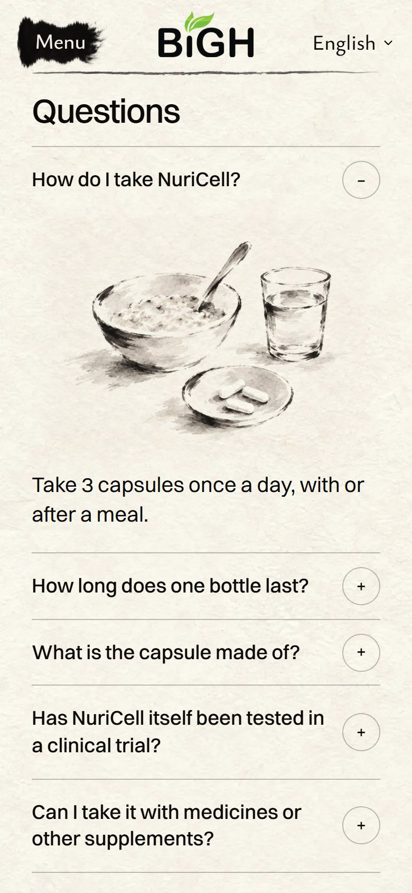
        <figcaption>Phone.</figcaption>
      </figure>
    </div>
    <figure>
      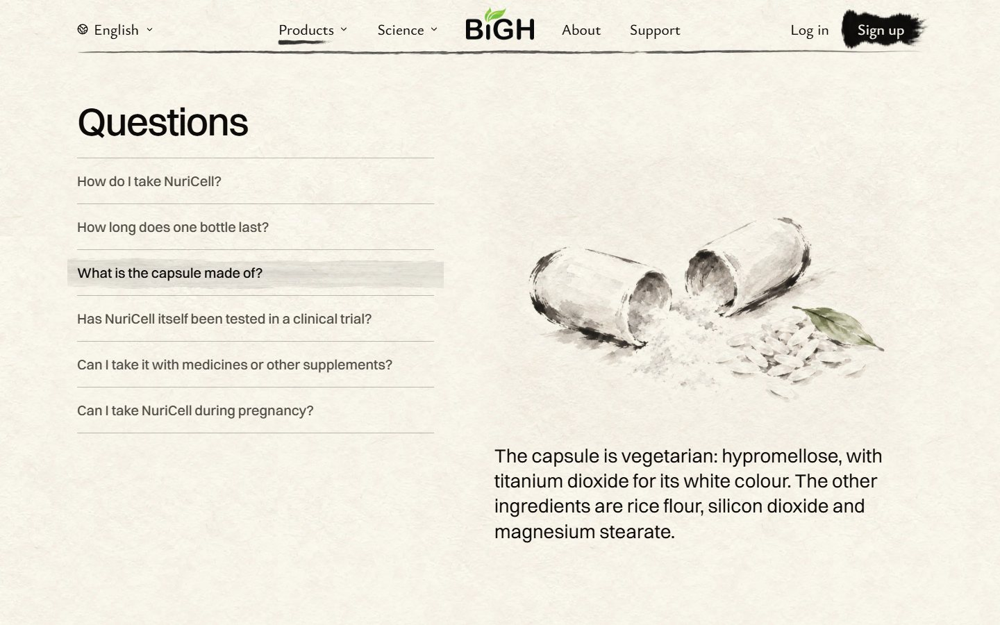
      <figcaption>After tapping "What is the capsule made of?"</figcaption>
    </figure>
    <div class="paints" aria-label="All six paintings">
      <figure>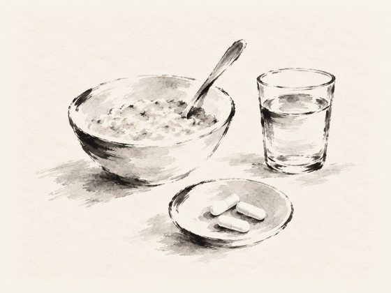<figcaption>How to take it</figcaption></figure>
      <figure>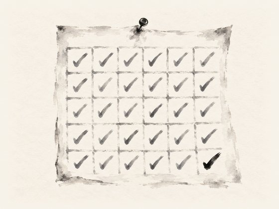<figcaption>How long it lasts</figcaption></figure>
      <figure>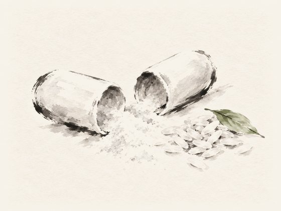<figcaption>The capsule</figcaption></figure>
      <figure>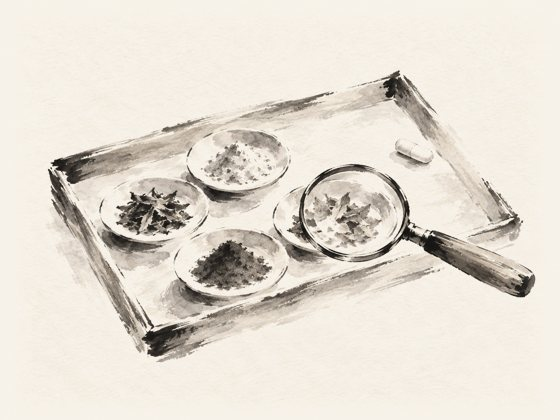<figcaption>The research</figcaption></figure>
      <figure>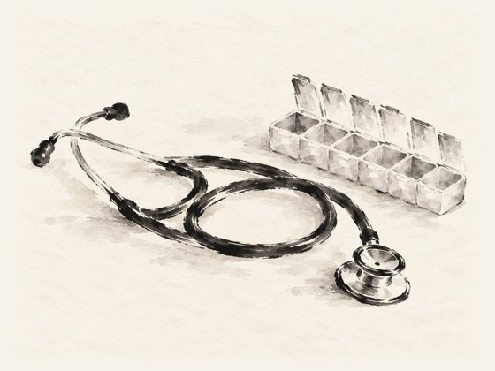<figcaption>Medicines</figcaption></figure>
      <figure>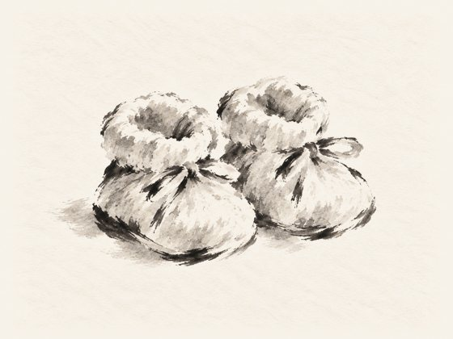<figcaption>Pregnancy</figcaption></figure>
    </div>
  </section>

  <section>
    <h2><span class="tag">B</span>The breakfast table</h2>
    <ul>
      <li>One big painting: a California kitchen table in the morning, with the real NuriCell bottle on it.</li>
      <li>Small numbers sit on things in the painting: the bowl, the calendar, the capsules, the books, the pill box, the bottle.</li>
      <li>Every answer is showing below, with its number. Nothing to tap.</li>
    </ul>
    <p class="score">My score: <b>8 / 10</b> on a laptop, <b>7.5</b> on a phone</p>
    <p class="note">What holds it back: you scroll down to read what a number means. On a phone the table gets small. The real bottle looks a bit pasted on, like on the homepage.</p>
    <div class="pair">
      <figure>
        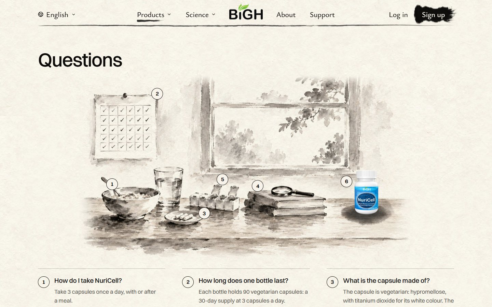
        <figcaption>Laptop: the painting.</figcaption>
      </figure>
      <figure>
        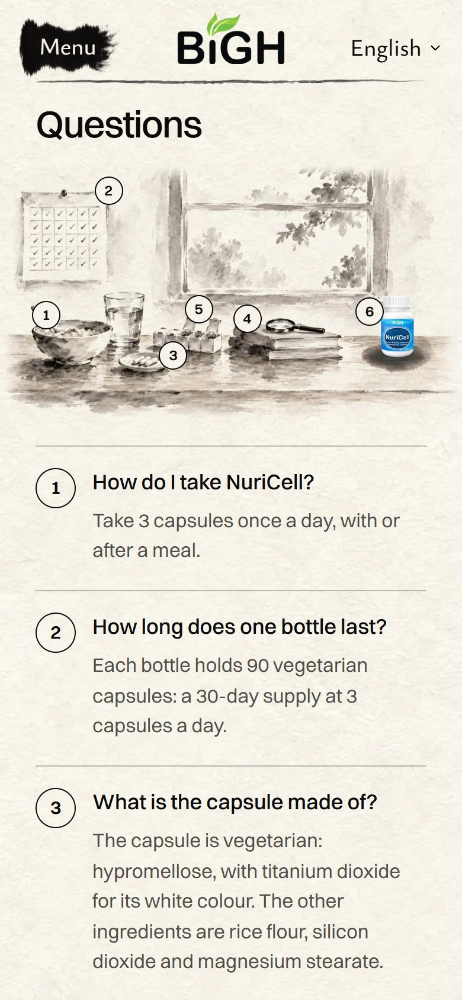
        <figcaption>Phone.</figcaption>
      </figure>
    </div>
    <figure>
      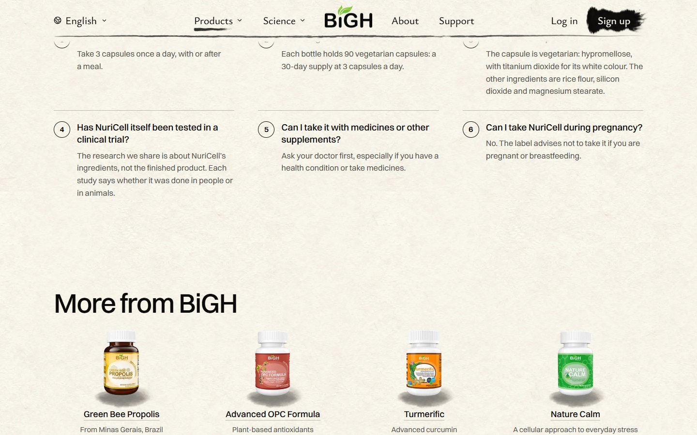
      <figcaption>Scrolled down: the numbered answers.</figcaption>
    </figure>
  </section>

  <section>
    <h2>Good to know</h2>
    <ul>
      <li>All five product pages share this Questions part. Your pick would go on all five. Each gets its own few paintings.</li>
      <li>I also tried big short answers with no pictures. It looked plain (6/10), so I left it out.</li>
      <li>The paintings came from Codex, on your ChatGPT plan. No paid picture credits used.</li>
    </ul>
  </section>
</main>
